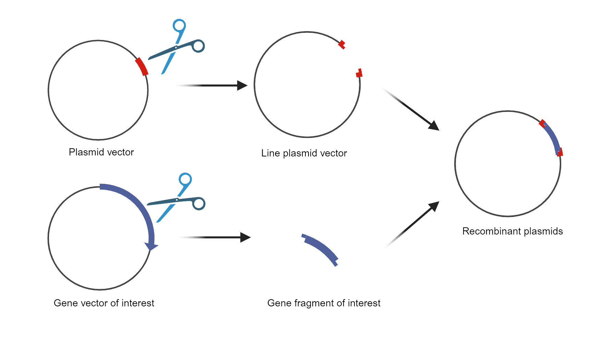
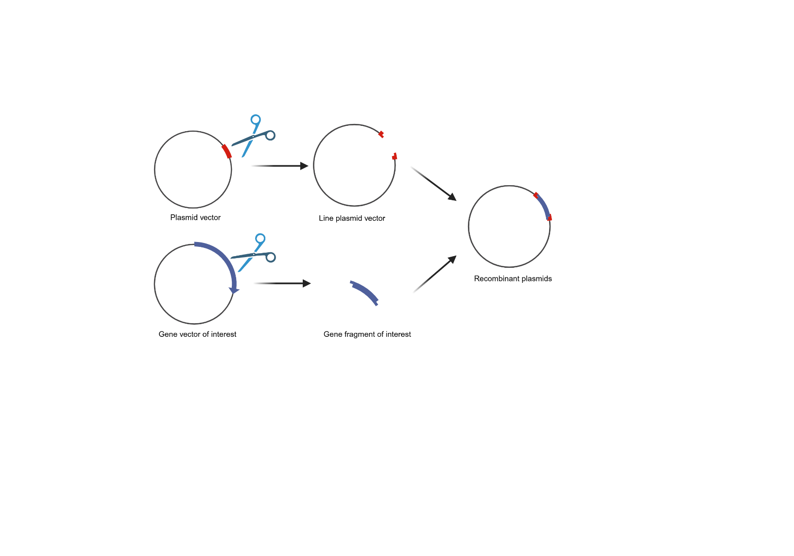
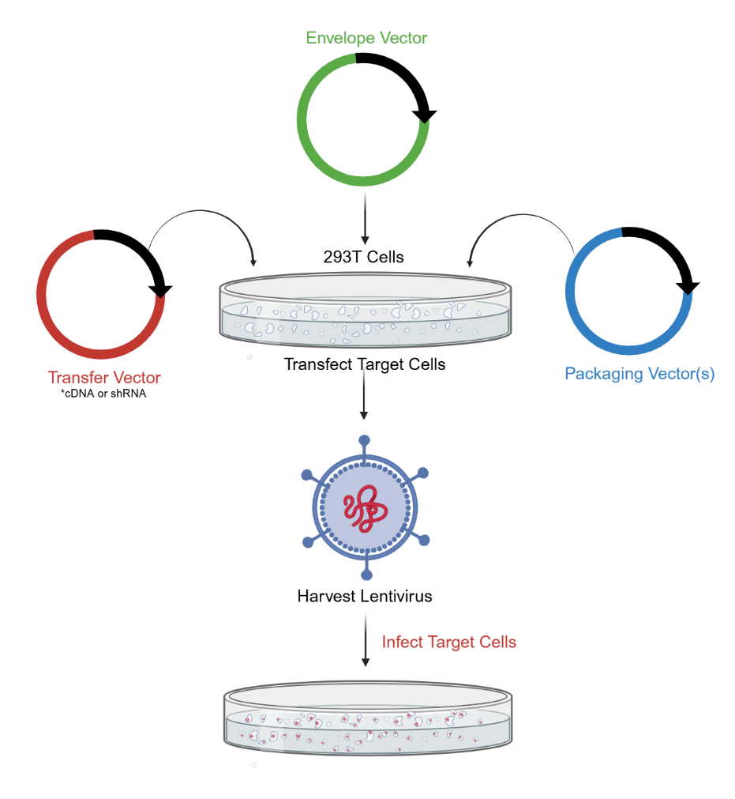
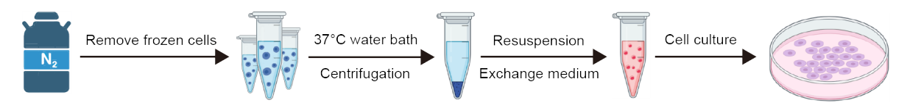
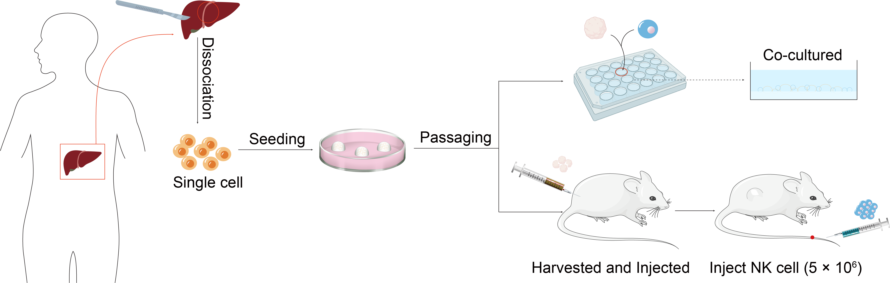
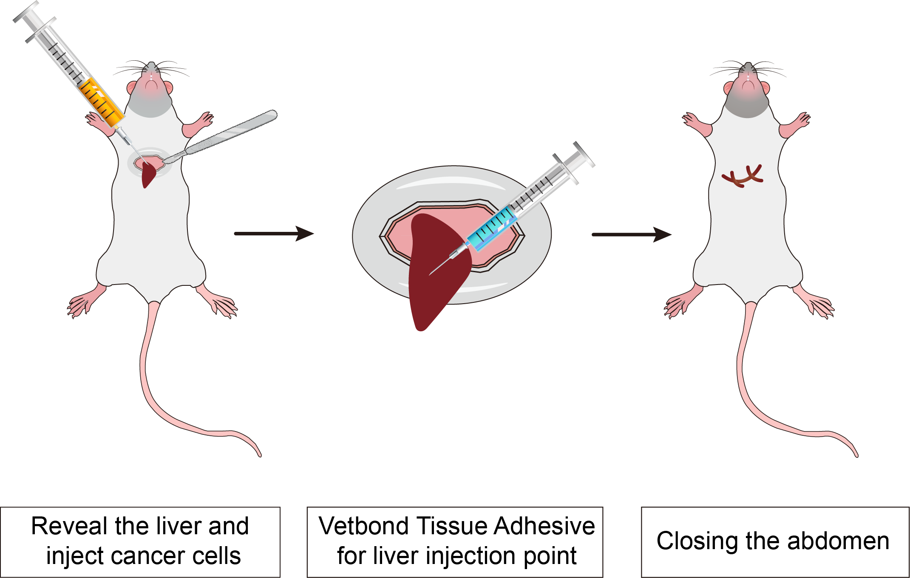
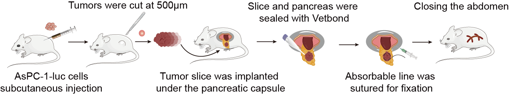
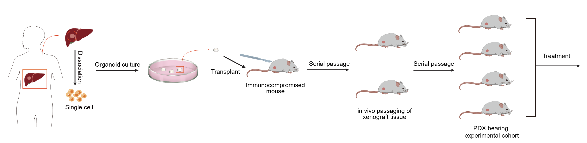
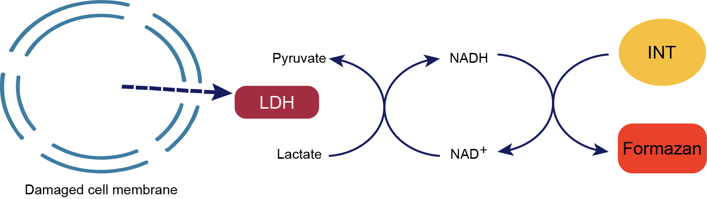

Principle
Plasmid construction is a fundamental technique in molecular biology used to create recombinant DNA molecules for various applications, including gene expression, functional studies, and protein production. The process involves inserting a gene of interest into a plasmid vector—a circular DNA molecule that replicates independently within a host cell. This is achieved through restriction enzyme digestion, which cuts both the plasmid and the gene at specific sites, and ligation, which joins them together. The newly constructed plasmid is then transformed into a host organism, such as bacteria or yeast, where it can replicate and express the inserted gene, enabling further analysis and experimentation.
Method
1. The CAR sequence was synthesized by Genewiz (Suzhou, China), introducing an Xbal restriction site at the 5’ end of the sequence and a BamHI restriction site at the 3’ end of the sequence. The CARs target fragment and vector were double-digested with restriction enzymes.
2. The reactions were maintained at 37°C hour, inactivated at 65 °C for 5 min, and then stored at 4˚C. The products were proceeded by using 1.5% agarose gel electrophoresis at 120V for 45 min and then the target bands were recovered.
3. The linear vectors and the target segments were recycled.
4. The whole system was incubated at 16 °C for 30 min, inactivated at 65°C for 10 min, and then stored at 4 °C. The connection products were transformed into Stbl3 by T4 ligase (Rapid DNA Ligation Kit, Genstar). After selected clones were identified correctly through sequencing, we shaked the bacteria (500 mL volume) in the 2L flask and used the NucleoBond Xtra Midi Maxi EF plasmid purification kit (macherey-nagel 740420.10) to extract the plasmids.

Fig. Schematic diagram of plasmid construction
Principle
The lentiviral vector packaging system consists of two main components: the packaging component and the vector component. The packaging component is created by removing cis-acting sequences necessary for HIV-1 genome packaging, reverse transcription, and integration, allowing it to provide essential proteins for viral particle production. In contrast, the vector component contains these required cis-acting sequences along with a polyclonal site regulated by a heterologous promoter where a target gene can be inserted. By co-transfecting packaging cells with multiple plasmids of the vector components, replication-defective lentiviral particles carrying target genes can be produced.

Method
1. Cell Preparation: Seed HEK293T cells in a 10 cm dish at a density of 3-4 × 106 cells per dish in DMEM supplemented with 10% FBS and 1% Pen-Strep. Incubate the cells at 37 °C in a 5% CO₂ atmosphere until they reach 70-80% confluence (approximately 24 hours).
2. Transfection: Prepare the DNA-PEI complex. For each 10 cm dish, use 10 µg of the lentiviral transfer plasmid, 5 µg of pMD2.G, and 7.5 µg of psPAX2. Dilute the plasmids in 500 µL of serum-free DMEM. Separately, dilute 60 µL of 1 mg/mL PEI in 500 µL of serum-free DMEM. Combine the DNA solution with the PEI solution, mix gently, and incubate at room temperature for 20 min to allow the formation of DNA-PEI complexes.
3. Transfection Addition: Add the DNA-PEI complex dropwise to the HEK293T cells. Swirl the dish gently to distribute the complex evenly. Incubate the cells at 37°C in a 5% CO₂ atmosphere.
4. Medium Change: After 6-8 hours, replace the transfection medium with fresh DMEM supplemented with 10% FBS and 1% Pen-Strep to reduce toxicity.
5. Virus Harvesting: Collect the supernatant containing lentiviral particles at 48 and 72 hours post-transfection. Pool the supernatants and centrifuge at 500 × g for 10 min to remove cell debris.
6. Supernatant Filtration: Filter the supernatant through a 0.45 µm filter to ensure the removal of any remaining cellular debris.
7. Virus Concentration: Concentrate the viral particles by ultracentrifugation at 25,000 rpm for 2 hours at 4°C. Carefully remove the supernatant and resuspend the viral pellet in an appropriate volume of PBS or DMEM.
8. Virus Storage: Aliquot the concentrated virus and store at -80 °C until use. Avoid repeated freeze-thaw cycles.
Principle
Using artificially controlled environmental conditions to simulate the in vivo environment, cells grow and divide in vitro. In this process, cells are regulated and influenced by many factors, such as temperature, humidity, pH, nutrients, etc. Through proper regulation and control of these factors, the normal growth and division of cells can be maintained, and the biological characteristics of cells can be maintained.
Method
1. Cell resuscitation
(1) Put the required equipment, such as 10 mL pipette, pipette gun, 1 mL gun head, 50 mL centrifuge tube, culture bottle, etc. on the ultra-clean working table. Start the operation after 30 min of ultraviolet light irradiation and 30 min of ventilation.
(2) Preheat the culture medium.
(3) Disinfect the utensils with 75% alcohol and put them into the ultra-clean bench.
(4) The frozen cells were taken out from the liquid nitrogen tank.
(5) The frozen cells were placed in a water bath at 37 °C and rapidly melted by rapid shaking.
(6) Disinfect the utensils with 75% alcohol and put them into the ultra-clean bench.
(7) Take 9 mL medium to 50 mL centrifuge tube.
(8) The thawed cell suspension was pipetted into a centrifuge tube with a 1mL tip.
(9) Centrifugation at 1000 rpm/min for 5 min.
(10) Disinfect the utensils with 75% alcohol and put them into the ultra-clean bench.
(11) Aspirate the supernatant.
(12) The cells were resuspended in 1 mL medium, and the cell suspension was transferred to the culture flask. Add an appropriate amount of medium, gently shake the culture flask to evenly distribute the cells and mark them.
(13) The restored cell density and state were observed under a microscope.
(14) Put the cells back into the incubator for static culture.

2. Exchange medium
(1) The PBS buffer solution (autoclaved) and the complete medium were prepared in advance and wiped with alcohol before moving into the biological safety cabinet.
(2) Change the medium: the adherent cells were completely changed, the old medium was removed, washed with PBS for 2-3 times, and then the fresh medium was added. The suspension cells were replaced with half of the medium, half of the old medium was removed, and then fresh medium was added. The culture could also be transferred to a centrifuge tube, and the old medium was removed by centrifugation, and then the new medium was added to re-suspend the cells.
3. Cell passages
(1) Complete medium, PBS, trypsin, petri dishes, centrifuge tubes, etc. were prepared in advance, and transferred into a biological safety cabinet after alcohol wiping.
(2) The old medium was discarded, and then washed 2-3 times with PBS, 1 mL trypsin was added, and the cells were digested. When the cells became round under the microscope, 1 mL medium was added immediately to terminate the digestion, and then the cells were scanned layer by layer. The cell suspension was added to the centrifuge tube, 1000 rpm, 5 min.
(3) After centrifugation, the medium was discarded, the new medium was added to blow the re-suspended cells, and then added to the culture dish, 0.5 or 1 mL cell suspension was added to each culture dish.
Principle
Organoid culture technology refers to a group of cells with self-renewal and self-organisation capabilities cultured in an in vitro environment. These cells can be derived from primary cells, embryonic stem cells or multipotent stem cells. They possess organ-like structure and function and can mimic in vivo tissue structure and function to the greatest extent possible. They can also be passaged long-term and used as an experimental model for patient individualization.
Typical organoid culture protocols commence with the isolation of embryonic stem cells or pluripotent stem cells, which are subsequently cultured in a supportive medium to facilitate three-dimensional cell growth. The signaling pathways that mediate organoid formation are the same as those used for organ development and maintenance of homeostasis in vivo. Consequently, a variety of cytokines, growth factors and small molecule compounds must be introduced during the culture process in order to activate or inhibit specific cell signaling pathways. The primary component of the culture is Matrix Gel, a natural soluble basement membrane matrix extracted from extracellular matrix protein-rich mouse tumors. It consists of a range of extracellular matrix components, including laminin, collagen type IV and nestin, and provides support, tensile strength and scaffolding support for tissues and cells (Fig.).

Fig. Hepatocellular carcinoma organoid construction
Method
1. The process of digesting human liver tumor tissue
(1) The tumor tissue should be chopped into pieces measuring between 0.5 and 1 mm³ under sterile conditions and placed into a 100 mm petri dish.
(2) The chopped tissue should then be submerged into a 15 mL centrifuge tube, with approximately 10 mL of ice-cold washing medium added. The tissue should then be gently agitated with a 10 mL pipette to precipitate the tumor tissue. The supernatant, including blood cells and floating fat mass, should be discarded, and this step should be repeated once.
(3) A volume of approximately 4-5 mL of pre-warmed human liver digest should be added per gram of tissue. The solution should then be placed on a test-tube rotary shaker in an incubator at 37 °C, mixed thoroughly, and allowed to digest.
(4) Following a 30-minute digestion period, the solution should be agitated to ascertain the presence of single cells. In the event of a low concentration of single cells, the solution should be returned to 37 °C and the digestion process continued. The suspension should be monitored at 10-minute intervals for a maximum of 90 min, with digestion halted when the suspension contains 80-100% single cells.
(5) Upon completion of the digestion process, the solution should be filtered through a 70 µm filter and then through a second filter, which should be pre-cooled, before being added to the washing medium.
(6) Centrifuge at 4 ℃ and 300×g for 5 min, discard the supernatant, and add pre-cooled washing medium to 15 mL.
(7) Centrifuge at 300×g for 5 min at 4 °C, discard the supernatant, and then add pre-cooled washing medium to 15 mL.
2. Inoculation of liver cancer cells
(1) The supernatant should be removed, and the cells should be resuspended in BME2 matrix gel. The cells should then be inoculated into 24-well plates with the matrix gel kept at a low temperature throughout the process.
(2) Add 500 µL of medium per well in the 24-well plate and incubate in a cell culture box.
(3) The medium should be replaced with a fresh one after a period of three to four days.
Principle
Immunodeficient mice are a kind of mice whose immune system function is inhibited or lost through genetic modification, which makes them an important experimental tool in many biomedical research fields. Because of their incomplete immune system, these mice can receive xenotransplantation of cells or tissues, such as humans, for a variety of research applications.
Method
The luciferase gene-labeled HCC cell line in the logarithmic growth phase was digested and prepared into 5×107 cell/mL cell suspension by HBSS.
1. The NCG mice were anesthetized and opened about 1 cm horizontally under the xiphoid process, and part of the liver was exposed by squeezing the left and right abdominal cavity. 100 μL of the prepared cells were injected into the liver of the nude mice with 1 mL insulin injection needle. At the same time, the needle was drawn and the assistant used Vetbond Tissue Adhesive to quickly close the pinhole to prevent bleeding and tumor cell outflow to form intraperitoneal implantation.
2. The liver was gently pushed back into the abdominal cavity with a cotton rod wet with normal saline, and the abdomen was closed.
3. Subsequent tumor volume was monitored by small animal imaging.

Principle
The TME significantly influences the biological characteristics of tumor cells. Subcutaneous implanted tumors are removed from their primary tissue microenvironment, resulting in development that deviates from clinical reality. Additionally, this model exhibits poor drug responsiveness, low metastatic rates, and survival curve data that do not correlate with clinical outcomes. To address these limitations, an in-situ transplantation model of tumor cell lines was constructed using primary cultured tumor cells. This model enables the assessment of drug efficacy and disease progression through various methods, including the observation of clinical symptoms in mice, survival times, tumor volume measurements, and the use of bioluminescent imaging to track luciferase-labeled tumor cells. This approach allows for real-time monitoring of tumor growth, distribution, and metastasis. Given the unique tumor growth microenvironment of liver cancer, coupled with the liver being the largest immunologically privileged organ in the human body, in situ tumor formation represents the optimal model for exploring adoptive immunotherapy for liver cancer.

Fig. The procedures of the in-situ pancreatic tumor-bearing mouse model construction
Method
1. Cell Culture
Pancreatic cancer cells tumor cell were cultured in DMEM medium supplemented with 10% fetal bovine serum, 100 mg/mL penicillin, and 100 mg/mL streptomycin and maintained in a 37 °C incubator with 5% CO₂.
2. Construction of the In Situ Pancreatic Cancer Tumor Model
(1) Cell preparation
Tumor cells were seeded in 10 cm culture dishes using DMEM medium (containing 10% fetal bovine serum and 1% penicillin-streptomycin) and incubated at 37 °C in a 5% CO₂ atmosphere until the cells reached the logarithmic growth phase.
(2) Harvesting cells with trypsin
1 mL of 0.25% trypsin was added to each 10 cm dish for digestion for 1 min. Afterward, 2 mL of DMEM containing 10% fetal bovine serum was added to terminate the digestion. The cell suspension was transferred to a 15 mL centrifuge tube, and 5 mL of PBS was added to wash the dish. The solution was collected into the 15 mL tube, centrifuged at 1000 rpm/min for 5 min, and the supernatant was discarded. The tumor cell cells were then resuspended in PBS, centrifuged again at 1000 rpm/min for 5 min, and the wash was repeated twice.
(3) Cell counting
The harvested tumor cell cells were resuspended in PBS, counted, and adjusted to a final concentration of 2×10⁷ cell/mL.
(4) Anesthesia of mice
Each mouse received an intraperitoneal injection of the anesthetic pentobarbital (150-200 μL), and the injection site was disinfected with 75% ethanol prior to administration.
(5) Injection of tumor cell
After anesthesia, the abdomen of the mouse was disinfected with povidone-iodine using a cotton swab. A longitudinal incision of approximately 1 cm was made in the left upper abdomen with ophthalmic surgical scissors. The spleen was gently elevated using a sterile cotton swab to visualize it, followed by careful exploration of the pancreas. Once the pancreas was located, the tip of the tail was grasped with curved ophthalmic forceps and gently pulled to expose the pancreas (care was taken to avoid rupturing the spleen). A 27-gauge needle was used with a 1 mL syringe to gently insert the needle into the pancreas from the tail end towards the head region, ensuring that it did not penetrate through the pancreas to prevent leakage of pancreatic fluid, which could lead to the death of the mouse. Each mouse received an injection of 50 μL containing 2×10⁷ cell/mL of tumor cell cells (successful injections were indicated by a visible small blister formation; if the pancreas was punctured, leakage of the cell suspension would be observed). After the injection, the direction of the needle was slightly adjusted, and the cell suspension was slowly injected while withdrawing the needle. Applying gentle pressure with a sterile cotton swab at the injection site for a moment effectively prevented leakage. The spleen and pancreas were then gently returned to the abdominal cavity, and the skin and peritoneum were sutured using 3-0 surgical sutures. Post-surgery, the mice were placed in a warm environment illuminated by incandescent light until they awakened naturally.
Principle
Patient-derived organoid xenograft (PDOX) mouse model is a human xenograft model established based on the patient-derived organoid (PDO) model in immune-deficient mice. This method involves extracting cells from a patient's tumor tissue, culturing them into three-dimensional organoid samples in the laboratory, and then transplanting them into mice to form a xenograft model.
Method
1. Mouse Preparation: Use immunodeficient mice (e.g. NOD/SCID or NSG mice) to minimize immune rejection. Anesthetize the mice with isoflurane.
2. Surgical Procedure: Sterilize the surgical area and set up a sterile field. Make a small incision in the appropriate organ (e.g. mammary gland for breast cancer, liver for liver cancer or skin). Implant the minced tumor pieces or cells directly into the organ. For orthotopic placement, ensure proper alignment with the native tissue.

Principle
The action of lactate dehydrogenase resulted in the reduction of NAD+ to form NADH. Subsequently, the combination of NADH and INT (2-p-iodophenyl-3-nitrophenyl tetrazolium chloride) was catalyzed by thioctylamine dehydrogenase (diaphorase) to form NAD+ and formazan. This process produced an absorption peak at 490 nm. Absorption peaks were generated at 490 nm, thus enabling the quantification of lactate dehydrogenase activity by colourimetry. Furthermore, the absorbance was found to be linearly and positively correlated with the activity of lactate dehydrogenase. Lactate dehydrogenase activity in cell lysates was assayed to evaluate the in vitro and ex vivo killing activity of CAR-NK cells. The schematic diagram of the principle is shown in Figure.

Fig. Principle of LDH Assay
Method
The cytotoxicity function of CAR-NK cells was assessed by co-culture tumor cells at an E:T (effector to target) ratio of 1:1. For lactate dehydrogenase (LDH), CytoTox96 cytotoxicity assay was used according to the manufacturer's instructions (Promega, G1780). Cytotoxicity (%) = [LDHE:T -LDHE]/LDHMax× 100%.